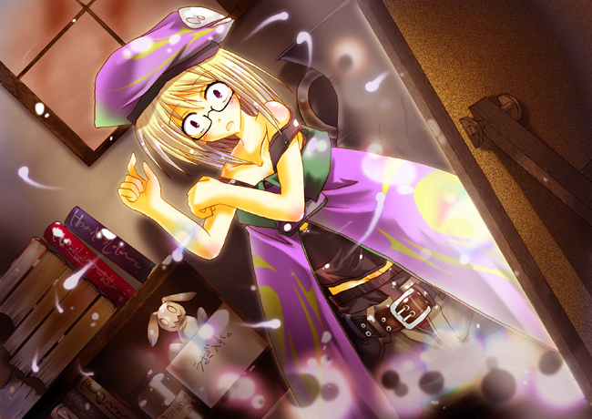

| 魔術・武術・そして錬金術。三つの「術」を主軸として成り立っている世界が在った。 三つの術には、それぞれの神がおり、嘗ては一つとしてお互い協力しあっていた。 だがある日、彼らの父たる主神が何処ともなく消えてしまう。 その後継者をめぐり、三神は争いを始めてしまった。 戦いは熾烈を極め、遂に決着がつかず。 結果、世界はそれぞれが司る三つの「術」がひしめくかたちとなった。 人々はこれを、「三神戦争」として世に伝えていった。 ――これは、その「三神戦争」の後、ある地方都市から始まる遥かな物語である。 |
あるけみすと☆さーが
〜ティルミットの冒険記〜
第一話：「開けてしまった玉手箱」
作品の設定はこちらをご覧下さい。
http://www.geocities.jp/fantasydreamsjp/alchemistsaga.txt
作：マコト
「ティルー、起きろー、朝だぞー」
やたらとでかい声がする。
……朝の寝覚めはいつもこうだ。
「…たまにはこう、天使のねーちゃんが起こしに来てくれないもんかね」
寝ぼけ眼をこすりつつ、俺はベッドから起き上がる。
「俺だって毎日おめーを起こしに来たくはねぇよ。けどよティル、おめーがいなきゃ他の錬金術師が動けねぇんだろ？ 仕方ねぇから俺が起こしに来てやってんだ、有難く思えよな」
「わーってんよ、んなこたぁ。……っし、着替えるとすっか」
ベッドから出て、俺はクローゼットから紫のローブを取り出し、着替え始める。
「今日は簡単に朝は済ませとくかな」
一階に降りて、俺は朝食を考えていた。
よし、朝はイーゲル産の鶏卵を使ったオムレツにトーストだ。
「今日も今日とて朝の出仕か……たまにゃ遊びたいぜ、ったく」
ボヤきながらトーストを齧る。
「何言ってんだよ。いっつもいっつも遊んでばっかの癖によ」
テーブルの向かい側からそう突っ込んでくるのは、俺の同居人・ダイン＝リヴリサックだ。
ガキの頃からの親友で、色々突っ込みが鋭いけど、何かと頼りになる奴。
赤い髪にバンダナ巻いて、いかにもって感じの戦士だ。
……この都市じゃ珍しいんだよ、戦士って。
「ま、俺はやりたいようにやる主義だしな。朝の強制出仕がおわりゃ、今日も遊び歩くさ〜」
俺はなんったって遊びたい。
……錬金術師ん中じゃ珍しいのかもな、俺って。
そんなこんなで、出仕の時間になった。
「じゃぁ、城出かけてくるわ。あとはよろしくな、ダイン」
帽子を被り、黒ぶちの眼鏡をつけて俺はダインに言った。
「おう、さっさと行って戻ってきな」
友人兼同居人の見送りを背に、俺は一路、領主の城へと行く。
こうして、俺―─ティルミット＝バルティシアの日常は始まってゆく。
否。
今まではこう始まっていた。
ここは、「錬金都市プフェールト」。
「錬金都市」なんつーたいそうな名前がついていやがるが、その実単に錬金術で成り立っている田舎街だ。
「錬金術」とは、まぁ、平たく言えば、「物質を元に更に上級の物質を創り出す」ものだ。
もともとは石ころを金に変えることから始めたから「錬金術」なんていうのだが、今となってはその限りではない。
これを利用して生活を成り立たせている所、みなこれを「錬金都市」という。
魔術で成り立つ場合は「魔術都市」、武術の場合は「武闘都市」って言うけどな。
んでまぁ、俺はその錬金都市に住む一端の錬金術師なわけだ。
才能があったのかは知らないが、今じゃ錬金術師としては最高の位である「第一級錬金術師」に史上最年少でなっている（らしい）。
俺としては単に良い資格が取りたかっただけで、上位であることに誇りとかそういうのはあまり感じていない。
しかし、この都市にゃ俺と同等の実力のある錬金術師がいないわけで。
望みもしないのに俺はこの都市の錬金術師のリーダーとなったわけだ。
錬金都市に住む全ての錬金術師は、毎朝都市の領主、即ち行政官+神官長たる「マスター」の城へ出仕する。
そこで今日一日の予定、行動などを決め、マスターの権限のもと、錬金術長、つまり俺の命令で各自行動するわけだ。
だから俺がいないと指示も滞ってしまうため、誰よりもまず俺が行かねばならんのだ。
「ああああ、めんどいなぁ……第一級になんざなるんじゃなかったぜ……」
城への道中、何度も俺は愚痴をこぼす。
「毎朝毎朝こんの長い距離を歩いてやってきて、そして堅っ苦しいマスター様からの堅っ苦しいお言葉聞いて、んで俺が指示ださなきゃいけないんだもんなぁ……」
はぁ。
今日既に七度めくらいのため息。
「ああああ、やってらんねぇ……。でも俺が休むとあとが恐いしなぁ……て、ん？」
道の脇に、誰か倒れている。
「……行き倒れ、ってやつか？」
近づいてそいつを見たところ、それは若い魔術師風の男だった。
息苦しそうで顔色も悪い。早くどこかで休ませなければヤバイ気がする。
「……」
家はもう遠く離れている。
かくなる上は――城っきゃねぇか。
「─―くそっ、どうしてこうも俺はお人好しかね……！」
自分に悪態をつきながら、俺はその男を担ぎ上げ、城まで走り始めた。
「どうなんだ、そいつの容態は」
出仕が終わり、城内の医務室にて。
俺は運び込んだ男をここに預け、出仕からまたここに戻ってきていた。
「だいぶ衰弱していましたが、命に別状はないようです。二、三日様子を見れば大丈夫だと思いますよ」
城の医師は言った。
「そうか……ならOKだな。俺は帰るわ。あとはよろしく頼む」
そう言って医務室を出ようとしたとき。
「……う」
「ん？」
振り向くと、魔術師が上半身をベッドから起こそうとしていた。
「目が覚めたのかあんた。大丈夫か？」
「はい……何とか。――もしかして、あなたが私をここまで？」
魔術師は意外にもはっきりとした口調で答えた。
「おうさ。――気をつけな。俺が見つけたからよかったものの、他の錬金術師だったらどうなっていたやら」
「はい……その通りですね……面目ない」
情けないことです、といった感じの顔でその魔術師はうなずいた。
……ダインは元々プフェールトの市民だから大丈夫なんだけど、一般的に他の都市の術を使う旅人はその都市の者から拒まれる。
――崇拝している神々が、お互い喧嘩してた、ってんだから仕方ないけどな……。
ちなみにその神々ってのは、魔術・武術・錬金術をそれぞれ創り上げた存在だという。
めっちゃくちゃに仲が悪かったらしく、それがもとで世の中は三つの「術」によって分かれているっていう伝承がある。
「じゃぁ俺はこれで帰るから、あんたも体調が整ったらここから出て行った方がいいぞ」
そう言ってまた出て行こうとする。
「あ、ちょっと待ってください！ これを……お礼にどうぞ」
「え？」
俺は呼ばれてまた戻ってくる。
魔術師が差し出したのは、一つの黒い箱だった。
形は横長の直方体。
これといった飾りは無いが、しっかりと紐で封印されていた。
「なんだ、こりゃぁ？」
突然ンなモン渡されても、俺は反応に困った。
「これは私にとって最高傑作とでもいうべきものです。これを魔術都市や魔術師に売れば、莫大なお金が貴方の懐に入ることでしょう。ただし注意してください。それは絶対に開けてはいけません。開けた瞬間、あなたはその身の真実に驚かれることになるでしょう」
「へぇ―─」
魔術師の言葉は、何か、呪文めいていた。
それにのせられたのか、俺は俄然これに興味が沸いてしまった。
「OK、これはもらっとくよ。じゃぁ、身体を大事になー」
「はい、どうも。いいですか、絶対にそれは開けてはいけませんよ」
「わーったって。んじゃな」
そうして、今度こそ俺は医務室を出て、城を後にした。
家に帰ると、中には誰もいなかった。
「ダインのヤツ……一人で女と遊びに行きやがったなぁ！？ 許せん、あいつは今日夕飯抜きにしちゃる」
そう憤慨しながらも、俺は居間の横にある扉を開ける。
そこは、円くて広い床が広がる空間。
部屋は薄暗く、天井は見えない。
唯一の明かりは、天井からつるされた一つのランプのみ。
机と椅子が置いてあるだけであとは何も無いシンプルな場所。
ここが俺の錬金術の研究室だ。
「さて、と……」
俺は机に、先ほど魔術師からもらった黒い箱を置いた。
「これ、どうするっかなぁ……？ やっぱ、開けるべきか？ いやけどなぁ……」
魔術師の作った品物、というのが少し気にかかる。
偏見かもしれないが、彼らが創ったこういった手合いのモノには、なんらかの魔術が入れられているのだ。
それは大抵呪いであったり攻撃魔術であったり。
─―絶対に開けてはいけません。開けた瞬間、あなたはその身の真実に驚かれることになるでしょう―─
魔術師の言葉が頭を駆け巡る。
しかし、一度興味を持ったものから目を逸らすのは俺には不可能と言っても過言じゃない。
「─―ちびっとだけ、開けるか。ちびっとだけな♪」
誘惑に負けた俺は、紐の封印を解く。
そしてふたを少しずらす。すると―─。
ゴウウッ！！
「うわっ！？」
突然吹き荒れる魔力の奔流。
「なななな、なんだぁ！？」
俺は逃げることも出来ず、そのまま魔力の渦に呑み込まれてしまう。
そして、視界がブラックアウトした―─。
「あれ、ティルのヤツ帰ってねぇのかな？ ――でも、鍵開いてるな……」
─―遠くでダインの声が聞こえる。
「おーいティルー、どこだー？」
ダインは俺を捜しているらしい。
研究室だ、と言おうとしたが思うように身体が動かない。
……しかたねぇ、アイツが来るまで待つっきゃねぇか……。
「……研究室か？ ティルー、入るぞ」
と、ようやくダインが研究室前まで来た。
ガチャ、とドアが開く音。
差し込む光と共に入ってきたのは、間違いなくダインだった。
「ティル？ ティルか？ ……おいおい、そんなとこで寝たら風邪引いちま―─」
途端、ダインは固まってしまった。
「く……なんとか動けるか……。―─どうしたんだ、ダイン？ そんなバカみたいな顔しやがって」
やっと身体が動くようになり、上半身を起こそうとする。―─が。
「あ、れ―─？ 服がなんか……でかい」
そう。なぜか俺のローブが巨大化しており、手足はすっぽり中に入ってしまっていた。
かろうじて顔が出ているだけのようだ。
「―─っ、俺が寝ている間に誰か俺の服を錬成して変にしやがったかな。―─て、なんか帽子もでけぇぞ……。靴もブカブカだな……」
いや、それらだけじゃない。
俺が身に付けているもの全部─―下着からアクセサリーまで、何から何までみな巨大化していた。
「いや―─これはむしろ―─」
俺が縮んじまったってことか！？
やはりさっきの箱は呪いの品物だったのか！
「─―くそ、参ったな。おいダイン、いい加減帰って来い」
ぱちん、と彼の前で両手を叩く。
顔を出すところから両手を出しているのでなんだか変な気分だ。
「─―はっ！？」
ようやくダインがこっちに戻ってきた。
「おう、ダイン。よくも俺を置いて一人で女と遊びに行ってやがったな！？ お前、今日はメシ抜きだから覚悟しとけよ」
と、言いたかったことを言う。
「……えと、誰かなお嬢ちゃん」
……。
「――はぁ？ 何言ってんだダイン。お前、とうとう目がイカレちまったのか？」
「む……口の悪いお嬢ちゃんだな。まるでティルそっくりだぜ」
ダインはさも当然に俺を「お嬢ちゃん」と呼んでくる。
「お前なぁ、何をどうみてこの俺をお嬢ちゃんとかほざいてるんだよ。―─確かに今、身体が縮んじまってるかもしれねぇけど、どうみたって俺はティルミット＝バルティシアだろ？」
当たり前のことを俺は言う。
「はぁ？ 何言ってんだお嬢ちゃん？ あのな、ティルは大人で、しかも男だぜ？ お嬢ちゃんなんかとは似てもにつかねぇぞ。――あ、ちょっと前髪の感じが似てるかもな」
なんて、ダインはますますわけのわからないことを言いやがる。
「――っ、いい加減にしろよダイン！ ふざけるのもそこまでにしろっ！ 俺はティルだよ、ティルミット！ これだけ言って―─」
と、今になってはっとした。
声が変だ。
身体が縮まっても声の質は変わらないと思うが、今の俺の声は明らかに男のものではない。
強いて言うなら、その、少女っぽいというか。
「っ―─！？」
嫌な予感がし、慌てて俺は身体をまさぐる。
「！！？？！！？？」
比較的がっしりとしていたはずの俺の胸が、ごくわずかだがやわらかく小さく膨らんでいる気がする。
「……ひょっとして、あ、アレも……」
恐る恐る例の場所へ手を伸ばす。
ぺたし。
「ななななななななな、無いっ！ 何も無いっ！」
そう。
男性にあるべきはずのものが、どこをどう探しても俺についていなかった。
代わりになんか、筋のような感覚があった……ような。
「どどどどど、どうなってるんだよこれ！？」
「な、なんなんだお嬢ちゃんは……？」
突然慌て出した俺に呆然とするダインを無視し、姿見を探す。
「あ、あった……て……」
そこに映っていたのは。
「なぁにぃぃぃぃぃぃぃぃぃぃぃぃぃぃぃぃぃ！！？？」
肩口まで伸びたブロンドの髪。
俺と同じくすみれ色の瞳をした大きな目。
可愛らしい小さな口。
130cmくらいしかない身長。
そこに、かつての俺の面影は殆ど、いやさ微塵にもない。
そう、俺は、
いわゆる「ロリッ娘」になってしまっていたのだった―─。

いらすと：榊原 燐様
あとがき
こんにちは。マコトです。
これは、私が昔ファンタジー作品書きたいなぁと思ってて、「Am I Girl !?」よりも先に創り上げた作品です。
これも未完成で四話から先が書けてませんが；；
この小説、実はどこかで「Am I Girl !?」と繋がっていますｗ
さてどこでかな？ それは、後々のお楽しみで……。
なお、作品中の殆どの名称はドイツ語です。
例としていえばプフェールト（pferd）＝馬、といった具合に（何故馬なのかはこれまた後ほどにｗ）
第二話・第三話もまた投稿していきますね♪
それでは、しーゆーあげいん♪
追記：今回は友人の榊原 燐様に挿絵を描いていただきました。本当にありがとうございます。
□ 感想はこちらに □